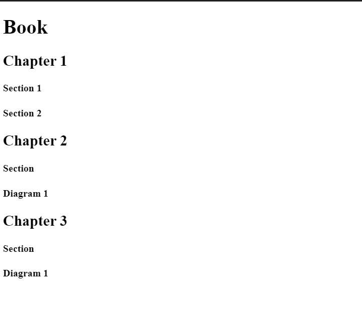

10<!-- TODO 1: Create the HTML Boilerplate -->
<!DOCTYPE html>
<html lang="en">
<head>
    <meta charset="UTF-8">
    <meta http-equiv="X-UA-Compatible" content="IE=edge">
    <meta name="viewport" content="width=device-width, initial-scale=1.0">
    <title>Priya Portfolio</title>
</head>
<body>
    
<h1>Priya Portfolio</h1>

<h2>My Project</h2>

<ol>
    <li><a href="./public/P1.html">Project 1<a></li>
        
    <li><a href="./public/P2.html">Project 2</a></li>
    <li><a href="./public/P3.html">Project 3</a></li>
    <li><a href="./public/P4.html">Project 4</a></li>
    <li><a href="./public/P5.html">Project 5</a></li>
    <li><a href="./public/P6.html">Project 6</a></li>
    <li><a href="./public/P7.html">Project 7</a></li>
    <li><a href="./public/P8.html">Project 8</a></li>
    <li><a href="./public/P9.html">Project 9</a></li>
    <li><a href="./public/P10.html">Project 10</a></li>
    <li><a href="./public/P11.html">Project 11</a></li>
</ol>

<a href="./contactme.html">Contact Us</a>
<a href="./About us.html">About US</a>

</body>
</html>

<!-- TODO 2: Add Your previous projects' HTML into the public folder -->

<!-- TODO 3: Take screenshots of your project previews and add the images to the images folder -->

<!-- TODO 4: Add titles/subtitles etc. -->

<!-- TODO 5: Add a link to the project pages -->

<!-- TODO 6: Add images to show the project previews
HINT for TODO 6: You can use the height attribute set to 200 to make the image smaller:
https://developer.mozilla.org/en-US/docs/Web/HTML/Element/img#attr-height -->

<!-- TODO 7: Add the Contact Me and About Me page links -->